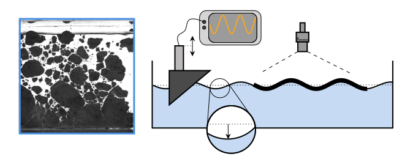

Publications
2025
Reentrant transition to collective actuation in active solids with a polarizing field
P. Baconnier, M. Aksil, V. Démery, and O. Dauchot, Physical Review Letters, 2025. Access here.
2024
Breaking of a floating particle raft by water waves
L. Saddier, A. Palotai and M. Aksil, M. Tsamados, and M. Berhanu, Physical Review Fluids, 2024. Featured in Physics, Editors' suggestion. Access here.
